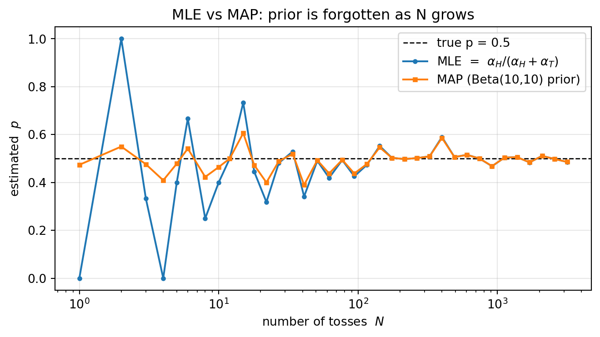

딥러닝을 깊이 이해하기 위해 반드시 필요한 통계적 추론·일반화 이론을 정리한다. 큰 축은 두 개다.
일반화(generalization)의 이론 — capacity, bias–variance tradeoff, VC dimension, inductive bias, Occam’s razor, No Free Lunch.
모수 추정(parameter estimation) — Maximum Likelihood Estimation(MLE)과 Maximum a Posteriori(MAP), 그리고 그 사이를 잇는 Bayesian 관점.
Note한 줄 요약
“좋은 모델”이란 training data를 잘 맞추는 모델이 아니라 보지 못한 데이터(test)에서 잘 동작하는 모델이다. 이 노트의 거의 모든 개념은 이 한 문장의 변주다.
무선통신 전공자를 위한 직관: 이 노트의 추정 이론은 수신기 설계에서의 검출/추정 이론과 1:1로 대응된다. MLE ↔︎ ML detection, MAP ↔︎ MAP detection, prior ↔︎ a priori 심볼 확률 또는 채널 통계, bias–variance ↔︎ 추정기 MSE 분해. 각 절 끝의 무선통신 대응 박스에서 연결한다.
2 Capacity, Overfitting, 그리고 Bias–Variance Tradeoff
2.1 세 가지 오차: training / true / test
선형 기저함수 모델 \(f(\mathbf{x};\mathbf{w}) = \sum_i w_i h_i(\mathbf{x})\)를 생각하자. 회귀에서 squared error(L2)를 쓰면 training error는
이 적분은 일반적으로 계산 불가능하다. \(t(\mathbf{x})\)를 모든 \(\mathbf{x}\)에서 알 수 없고, 입력 분포 \(p(\mathbf{x})\)도 모르기 때문이다. 따라서 i.i.d. 표본 \(\{\mathbf{x}_1,\dots,\mathbf{x}_M\}\sim p(\mathbf{x})\)로 Monte Carlo 근사한다.
Training error의 식과 Monte Carlo로 근사한 true error의 식은 형태가 거의 같다. 그런데도 training error가 true error의 나쁜 추정치인 이유는 핵심적이다.
ImportantOptimistically biased estimate
고정된 하나의 \(\mathbf{w}\)에 대해서는 training error가 true error의 불편(unbiased) 추정치다.
그러나 우리는 바로 그 training set에 대해\(\mathbf{w}\)를 최적화했다. 즉 그 표본에 가장 잘 맞는 \(\mathbf{w}^{*}\)를 골랐다.
따라서 같은 데이터로 측정한 training error는 낙관적으로 편향(optimistically biased)된다. 모델이 “정답을 보고 시험을 친” 셈이다.
해결책은 데이터를 training set과 test set으로 분리하는 것이다. \(\mathbf{w}^{*}\)를 training set으로 구한 뒤, 한 번도 최적화에 쓰지 않은 test set에서 오차를 측정하면 일반화 성능(generalization error)의 비편향 추정치를 얻는다.
오차 추정기
성격
용도
Ground truth (true error)
이상적 기준 (계산 불가)
우리가 진짜 원하는 값
Training error
낙관적으로 편향됨
학습의 목적 함수
Test error
최종 측정치 (비편향)
일반화 성능의 보고값
2.3 Bias–Variance Tradeoff
가설 클래스(hypothesis class)를 고르는 행위 자체가 학습 편향(learning bias)을 도입한다.
더 복잡한 클래스 → bias 감소: 표현할 수 있는 함수가 많아져 진짜 함수에 더 가까이 갈 수 있다.
더 복잡한 클래스 → variance 증가: 데이터의 작은 변동(노이즈)에도 해가 크게 흔들린다.
데이터 분포 \(D(X,Y)\)와 가설 공간 \(H\)가 있을 때, 가설 \(h\in H\)가 다음을 만족하는 \(h'\in H\)를 가지면 \(h\)는 overfit한다. \[
\mathrm{error}_{\text{train}}(h) < \mathrm{error}_{\text{train}}(h') \quad\text{이면서}\quad \mathrm{error}_{\text{true}}(h) > \mathrm{error}_{\text{true}}(h').
\] 즉 training에서는 더 좋지만 true에서는 더 나쁜 다른 가설이 존재한다는 뜻이다.
NoteBenign overfitting (최근 현상)
전통적 bias–variance 관점에서는 모수가 지나치게 많으면 성능이 나빠져야 한다. 그러나 심하게 과매개변수화(over-parameterized)된 딥뉴럴넷은 노이즈가 있는 데이터를 완벽히 보간(zero training error)하면서도 unseen data에서 거의 최적의 일반화 오차를 낸다. 이를 benign overfitting이라 하며, 전통적 tradeoff를 도전한다. 대비되는 개념으로 tempered overfitting, catastrophic(전통적) overfitting이 있다.
무선통신 대응
Tip📡 Bias–Variance ↔︎ 추정기 MSE 분해
추정기 \(\hat\theta\)의 평균제곱오차는 정확히 같은 분해를 따른다. \[
\mathrm{MSE}(\hat\theta) = \underbrace{\big(\mathbb{E}[\hat\theta]-\theta\big)^2}_{\text{bias}^2} + \underbrace{\mathrm{Var}(\hat\theta)}_{\text{variance}}.
\]
LS 채널 추정기 vs MMSE 채널 추정기: LS는 unbiased지만 variance가 크다. MMSE는 채널 통계를 prior로 써서 일부러 bias를 넣어 variance를 줄인다 — 모델 복잡도를 낮추는 정규화와 같은 원리.
MVDR 빔포밍의 diagonal loading: 스냅샷이 적을 때 공분산 추정의 variance가 폭증한다. 대각 로딩 \(\hat{\mathbf{R}}+\epsilon\mathbf{I}\)은 bias를 감수하고 variance를 억제하는 정규화다.
AR/채널 탭 차수 선택: 탭 수(모델 차수)를 늘리면 training fit은 좋아지나 노이즈까지 모델링해 overfit한다. 차수 선택 = capacity 선택.
3 Capacity의 정량화: VC Dimension
Capacity는 “모델이 얼마나 다양한 함수를 맞출 수 있는가”이다. 이를 통제하는 방법이 가설 공간 선택(예: 1차 다항식 = 선형, 2차 다항식 = 2차곡선)이며, 정량화 지표가 Vapnik–Chervonenkis(VC) dimension이다.
3.1 정의: shattering
분류기 \(f\)의 VC dimension \(h\)는 \(f\)가 산산이 분리(shatter)할 수 있는 점의 최대 개수다. 여기서 “shatter”란 그 점들에 대한 모든 가능한 이진 레이블 배정을 \(f\)가 오차 없이 실현할 수 있음을 뜻한다. 즉 \(h\) = 정확히 분류할 수 있는 training point의 최대 수.
2차원 평면의 직선 분류기: \(h = 3\) (어떤 위치의 점 3개든 8가지 ± 배정을 모두 실현 가능하지만, 일반적 4점은 불가).
3.2 일반화 경계 (Vapnik, 1971)
가정: 모든 training/test 표본이 같은 분포에서 i.i.d.로 추출된다. 그러면 확률 \(1-\eta\)로
여기서 \(h\)는 VC dimension, \(R\)은 training 표본 수다. 두 번째 항이 capacity penalty이며, \(h\)가 크면(복잡한 모델) 커지고 \(R\)이 크면(데이터 많음) 작아진다. 데이터가 많을수록 복잡한 모델을 안전하게 쓸 수 있다는 직관의 수학적 근거다.
분류기
VC dimension
\(d\)차원 선형 분류기 (+ 상수항 \(b\))
\(d+1\)
신경망
\(\approx\) 모수 개수
1-nearest neighbor
\(\infty\)
1-NN의 VC dimension이 무한대라는 것은, 임의의 레이블 배정도 항상 0 training error로 외워버릴 수 있음을 뜻한다 — 전형적 overfitting 기계.
무선통신 대응
Tip📡 VC bound ↔︎ 모델 차수 선택 / 표본 복잡도
일반화 경계의 \(R\)(표본 수)는 채널 추정의 파일럿(training symbol) 수와 같은 역할이다. massive MIMO에서 추정해야 할 채널 차원 \(h\)가 커지면, 같은 성능을 위해 필요한 파일럿 수 \(R\)이 비례해 늘어난다 — 이것이 곧 curse of dimensionality이자 표본 복잡도(sample complexity)다.
4 Inductive Bias와 일반화
제한된 training 표본으로 미래(test)를 더 잘 예측하려면, 모델에 가정을 더해 규제(regularize)해야 한다. 이 가정이 inductive bias(귀납 편향)이며, regularizer의 형태로 들어간다.
4.1 대표적인 inductive bias
원리
내용
사용처
Maximum conditional independence
조건부 독립을 최대로 가정
Naïve Bayes
Minimum cross-validation error
CV 오차 최소 가설 선택
일반 모델 선택
Maximum margin
결정 경계의 여유(margin) 최대화
SVM
Minimum description length
더 짧은 설명 선호 (Occam)
Decision tree
Minimum features
쓸모없는 특징 제거
Feature selection
Nearest neighbor
이웃의 다수결 레이블 부여
k-NN
4.2 Occam’s Razor
“Pluralitas non est ponenda sine necessitate” — 필요 없이 복잡하게 만들지 말라.
짧은 가설을 선호하는 논거: 짧은 가설이 우연히 데이터에 맞을 확률이 낮다(긴 가설은 우연히 맞을 여지가 크다).
반론: 가설 공간이 작다고 가정하는 것일 뿐, 가설의 길이 자체에 본질적 특별함은 없다.
4.3 No Free Lunch Theorem
Important정리 (Wolpert & Macready, 1997)
가능한 모든 데이터 생성 분포에 대해 평균을 내면, 모든 분류 알고리즘은 본 적 없는 점을 분류할 때 동일한 오차율을 가진다. \(\Rightarrow\)보편적으로 다른 모든 알고리즘보다 우월한 머신러닝 알고리즘은 없다.
따라서 우리는 특정 과제(task)에 잘 동작하도록 알고리즘을 설계해야 한다. 과제마다 가장 적합한 모델이 다르므로, 새 과제를 만날 때마다 그에 맞는 모델을 설계/구축하게 된다.
NoteFoundation model은 NFL을 어기는가?
하나의 거대한 사전학습 모델(foundation model)을 여러 과제에 재사용하는 흐름은 NFL과 모순처럼 보이지만 그렇지 않다. Foundation model도 특정 과제에 잘 쓰려면 fine-tuning(또는 그 정교한 변형)이라는 과정을 거쳐 해당 과제에 맞춰 규제·적응시켜야 한다. NFL은 수학적으로 증명된 정리이며, 실무에서는 “그 평균”이 우리가 마주치는 분포와 다르기 때문에 foundation model이 실용적으로 효과적인 것이다.
5 Hyperparameter와 검증
5.1 Parameter vs Hyperparameter
Parameter: 데이터로부터 학습되는 값 (예: 가중치 \(\mathbf{w}\), 동전 예제의 \(p\)). 학습 = parameter tuning.
이 동전 예제는 closed-form 해가 존재하는 희귀한 경우다. 실제 목적함수는 99%가 convex도 concave도 아니어서 도함수를 0으로 두는 것만으로는 풀리지 않는다. 그래서 gradient descent(언덕을 한 걸음씩 내려가는 반복법)로 근사 최적해를 찾는다.
6.5 Conditional Log-Likelihood (지도학습 일반형)
대부분의 지도학습은 입력 \(x\)가 주어졌을 때 레이블 \(y\)의 확률 \(P(y\mid x;\theta)\)를 모델링한다. 표본이 i.i.d.이면
\(\theta\)는 조건이면서 동시에 모델의 파라미터다. 이 이중성을 드러내려 쉼표 대신 세미콜론을 쓰기도 한다: \(P(y\mid x;\theta)\). 의미는 같다.
6.5.1 왜 \(p(x)\)가 아니라 \(p(y\mid x)\)를 모델링하는가
레이블 공간 \(y\)가 입력 공간 \(x\)보다 의미적으로 훨씬 단순하기 때문이다.
예: 4K 이미지 한 장 ≈ \(3840\times2160\times3 \approx 2.4\times10^7\) 픽셀. 영상은 초당 60–120 프레임. 입력 공간 \(x\)의 차원은 천문학적이다.
반면 \(y\)는 “고양이/개” 같은 소수의 개념. \(P(y\mid x)\)를 푸는 편이 훨씬 다루기 쉽다(discriminative).
반대로 \(p(x)\) 자체(입력의 완전한 분포)를 모델링하면 이미지·영상·오디오를 생성(generate)할 수 있다 → generative model. (이후 강의의 생성모델로 이어지는 갈래.)
무선통신 대응
Tip📡 MLE ↔︎ ML detection, log-likelihood 합 ↔︎ MRC
ML 심볼 검출: \(\hat{s}_{\text{ML}}=\arg\max_s p(\mathbf{y}\mid s)\). 심볼이 등확률이라는 암묵적 prior 하에서 likelihood만 최대화 — 정확히 MLE다.
곱 → 합 = 다이버시티 합성: 독립 수신 브랜치 \(L\)개의 결합 likelihood는 곱이고, log를 취하면 합이 된다. AWGN에서 이 log-likelihood 합을 최대화하는 것이 곧 MRC(maximal-ratio combining)의 결정 통계와 같은 구조다.
Discriminative vs Generative: 결정만 내리는 검출기는 \(p(s\mid \mathbf{y})\)(discriminative), 수신신호의 전체 분포 \(p(\mathbf{y})\)를 모델링하는 것은 채널·간섭의 생성 모델링에 해당.
7 Bayesian 학습과 MAP
7.1 동기: 사전지식을 쓰자
동전이 대략 “50–50”이라는 사전지식(prior)이 있다고 하자. 관측이 적을 때 MLE는 위험하다. 10번 던져 앞면 3번이면 MLE는 \(\hat p=0.3\)이라 말하지만, 우리는 이것이 부정확함을 안다. 관측이 제한적일수록, 이미 아는 지식으로 추정을 안정화하고 싶다.
관측에만 끌려가지(hook) 말고, 내가 믿는 것과 본 것을 함께 저울질해 더 나은 결정을 내리자 — 이것이 MAP/Bayesian의 철학.
Prior가 없으면(=모름) prior를 균등(uniform)으로 둔다. 균등분포는 상수이므로 \(\arg\max\)에 영향을 주지 않는다. \[
P(p)=\text{const}\;\Longrightarrow\; \arg\max_p P(\mathcal{D}\mid p)P(p) = \arg\max_p P(\mathcal{D}\mid p).
\] 즉 MLE는 “prior를 균등하게 가정한 MAP”의 특수한 경우다. (MLE가 prior를 무시하는 것이 아니라, 균등 prior를 가정하는 것이라는 점이 정확한 표현.)
7.4 Conjugate Prior와 Beta 분포
Posterior를 닫힌 형태로 얻으려면 prior를 잘 골라야 한다. Conjugate prior는 posterior가 prior와 같은 분포족(family)에 속하게 만드는 prior다.
장점: 대수적 편의 — posterior가 닫힌 형태로 나온다.
교육적 장점: likelihood가 prior를 어떻게 갱신하는지(분포족은 같고 모수만 바뀜) 명확히 보여준다.
MAP 식을 MLE 식 \(\frac{\alpha_H}{\alpha_H+\alpha_T}\)와 비교하면, prior의 \(\beta_H,\beta_T\)가 실제로 던지지 않았지만 경험으로 가진 가상의 던지기 횟수(extra/pseudo tosses)처럼 작용한다. 즉 prior는 “이전 생애의 경험치”를 관측에 더해 주는 것.
데이터 폭증(\(N\to\infty\)): \(\alpha_H,\alpha_T \gg \beta_H,\beta_T\)가 되어 prior는 잊힌다(forgotten) → MAP \(\to\) MLE.
소표본: 예컨대 10번 관측 vs prior가 1000번 분량이면 prior가 추정을 지배 → 안정적 추정.
Note대규모 학습과의 연결
관측이 사실상 무한할 때(예: 수십억 토큰으로 학습하는 대형 모델)는 prior를 잊고 데이터에 의존한다. 반대로 데이터가 적은 초기 단계·소규모 문제에서는 prior(사전지식)에 의존해야 안정적이다. “데이터가 충분하면 데이터를, 부족하면 사전지식을”이라는 원리가 현대 대규모 학습의 철학적 바탕이다.
MAP 심볼 검출: \(\hat{s}_{\text{MAP}}=\arg\max_s p(\mathbf{y}\mid s)\,P(s)\). 심볼의 a priori 확률 \(P(s)\)가 prior다. 심볼이 등확률이면 \(P(s)\)가 상수가 되어 MAP = ML — 본문의 “uniform prior → MAP = MLE”와 정확히 같은 구조.
Prior ↔︎ 채널 통계: MMSE/Bayesian 채널 추정은 채널의 사전 통계 \(\mathbf{R}_h\)를 prior로 써서 적은 파일럿으로도 안정적 추정을 얻는다. Beta의 pseudo-count가 “가상 관측”이듯, MMSE는 prior 공분산이 “가상 측정”처럼 추정을 끌어당긴다.
소표본 ↔︎ 적은 스냅샷: 파일럿/스냅샷이 적을수록 prior(채널 통계)의 비중이 커지고, 많을수록 측정 데이터가 지배한다 — \(N\to\infty\)에서 prior가 잊히는 것과 동일.
8 종합 정리
flowchart TD A[일반화의 목표:<br/>unseen data 성능] --> B[Bias-Variance Tradeoff] B --> C[Capacity 통제] C --> C1[VC dimension] C --> C2[Inductive bias / 정규화] C2 --> C3[Occam's Razor] A --> D[No Free Lunch:<br/>task별 모델 설계] A --> E[Hyperparameter 선택] E --> E1[Held-out / Validation] E --> E2[k-fold Cross-Validation] F[모수 추정] --> G[MLE: max likelihood] F --> H[MAP: max posterior] G -. uniform prior .-> H H --> H1[Conjugate prior / Beta] H --> H2[prior = 가상 관측]
flowchart TD
A[일반화의 목표:<br/>unseen data 성능] --> B[Bias-Variance Tradeoff]
B --> C[Capacity 통제]
C --> C1[VC dimension]
C --> C2[Inductive bias / 정규화]
C2 --> C3[Occam's Razor]
A --> D[No Free Lunch:<br/>task별 모델 설계]
A --> E[Hyperparameter 선택]
E --> E1[Held-out / Validation]
E --> E2[k-fold Cross-Validation]
F[모수 추정] --> G[MLE: max likelihood]
F --> H[MAP: max posterior]
G -. uniform prior .-> H
H --> H1[Conjugate prior / Beta]
H --> H2[prior = 가상 관측]
Inductive bias(특히 Occam’s razor)는 overfitting을 막는 보편적 도구다.
VC dimension은 분류기 capacity의 정량적 척도이며, 일반화 경계로 데이터 양과 모델 복잡도의 관계를 설명한다.
No Free Lunch: 보편 최강 알고리즘은 없다 — 과제에 맞춰 설계하라.
Hyperparameter는 (cross-validation 등으로) 반드시 튜닝해야 한다.
MLE는 널리 쓰이는 추정 도구이고, MAP는 prior의 도움으로 더 나은 추정을 주는, 실무에서 더 널리 쓰이는 일반화다.
9 부록: 동전 예제 수치 실험
MLE와 MAP가 소표본에서 어떻게 다른지, prior가 어떻게 “잊히는지”를 직접 확인한다.
import numpy as npimport matplotlib.pyplot as pltrng = np.random.default_rng(0)p_true =0.5beta_H = beta_T =10.0# prior: 약 18번의 가상 관측에 해당 (beta_H+beta_T-2)Ns = np.unique(np.round(np.logspace(0, 3.5, 40)).astype(int))mle_vals, map_vals = [], []for N in Ns: flips = rng.random(N) < p_true aH = flips.sum(); aT = N - aH mle = aH / N if N >0else np.nan mapv = (aH + beta_H -1) / (aH + beta_H + aT + beta_T -2) mle_vals.append(mle); map_vals.append(mapv)plt.figure(figsize=(7,4))plt.axhline(p_true, color='k', ls='--', lw=1, label='true p = 0.5')plt.semilogx(Ns, mle_vals, 'o-', ms=3, label='MLE = $\\alpha_H/(\\alpha_H+\\alpha_T)$')plt.semilogx(Ns, map_vals, 's-', ms=3, label='MAP (Beta(10,10) prior)')plt.xlabel('number of tosses $N$'); plt.ylabel('estimated $p$')plt.title('MLE vs MAP: prior is forgotten as N grows')plt.legend(); plt.grid(alpha=0.3); plt.tight_layout()plt.show()

Figure 2: 표본 수에 따른 MLE vs MAP 추정값 (참값 p=0.5, prior Beta(beta_H=beta_T=10))
소표본에서는 MAP가 prior(\(p\approx0.5\)) 쪽으로 끌려가 안정적이고, \(N\)이 커질수록 MLE와 MAP가 모두 참값으로 수렴하며 둘의 차이가 사라진다(=prior가 잊힘). 이것이 본문 Section 7.5 의 “\(N\to\infty\)이면 prior가 forgotten”을 수치로 보인 것이다.